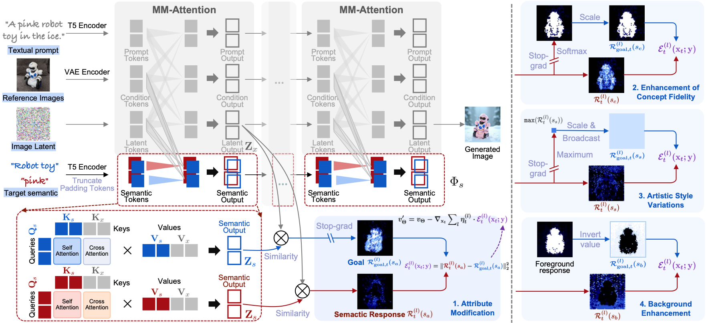
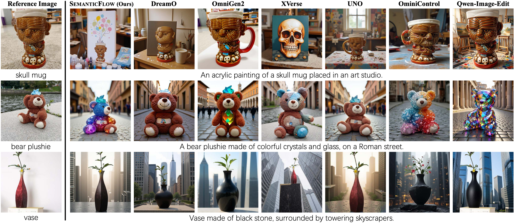
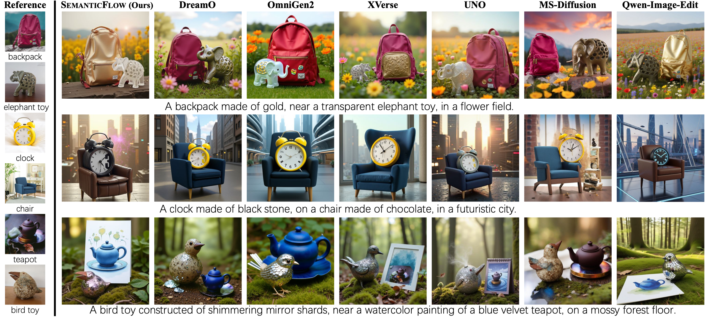

Tuning-free customized generation has gained popularity for its efficiency, particularly with the rise of rectified flow transformers. However, it often suffers from semantic inconsistency, degrading both concept fidelity and prompt alignment. We attribute this failure to their tendency for inference-time superficial feature fusion, which is intrinsic to the tuning-free paradigm. In this paper, we propose SemanticFlow for semantically consistent tuning-free customization, introducing explicit semantic control to jointly enhance concept fidelity and prompt alignment. SemanticFlow operates through a cohesive "perceive-and-manipulate" mechanism for aligned fusion of visual and textual features at the early denoising stage. Specifically, we first devise lightweight semantic token streams as run-time probes to accurately perceive the spatial responses of the target semantics. We then formulate semantic manipulation as an energy-guided rectification of these semantic responses within the rectified flow framework, steering the generation process toward the desired outcome. Experiments demonstrate that SemanticFlow jointly enhances concept fidelity and prompt alignment in previously challenging scenarios, effectively enabling semantically-consistent customization.
|
|
 An overview of SemanticFlow. The core idea of SemanticFlow is to perform spatially aware semantic manipulation for semantically-consistent customization. The target semantic is specified by its textual description. Lightweight semantic token streams are introduced as run-time probes to accurately capture the spatial distribution of target semantics. Semantic manipulation is then formulated as an energy-guided rectification of these responses within the rectified flow framework, enabling versatile enhancement. |


@inproceedings{jin2026toward,
title={Toward semantically-consistent tuning-free customization for rectified flow transformers},
author={Jin, Jian and Zhang, Kai and Fu, Zhenyong and Yang, Jian},
booktitle=NeurIPS,
year={2026}
}